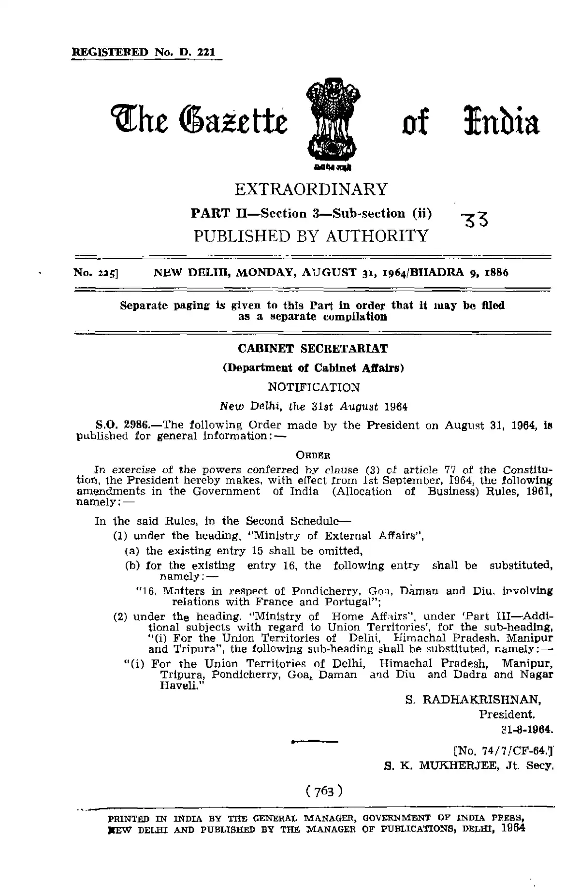

Amendment #33 (S.O. 2986, 1964)
3 changes: 0 to the First Schedule, 3 to the Second Schedule. 2 applied1 not applied
The order, page by page
Page 1 of 2

123Schedule 2 › Ministry of External Affairs › entry 15
applied at schedule 2 › ministry MINISTRY OF EXTERNAL AFFAIRS › entry 15 in the Rules after #33
Schedule 2 › Ministry of External Affairs › entry 16
- 16. Matters in respect of Pondicherry, Goa, Daman and Diu, involving relations with France and Portugal
applied at schedule 2 › ministry MINISTRY OF EXTERNAL AFFAIRS › entry 16 in the Rules after #33
Schedule 2 › Ministry of Home Affairs › Part III-Addi- tional subjects with regard to Union Territories › (i) For the Union Territories of Delhi, Himachal Pradesh, Manipur and Tripura
- i. For the Union Territories of Delhi, Himachal Pradesh, Manipur Tripura, Pondicherry, Goa, Daman and Diu and Dadra and Nagar Haveli
not applied (the change could not be placed in the Rules as read; see How this document was read)
Page 2 of 2

How this document was read
Known issues
| Change | Issue | Known as |
|---|---|---|
| 3 | change 3: no group_heading (i) For the Union Territories of Delhi, Himachal Pradesh, Manipur and Tripura under schedule 2 › ministry MINISTRY OF HOME AFFAIRS › part III | Home Affairs' structure |
From the Government of India (Allocation of Business) Rules, 1961 and their amendments, as published by the Cabinet Secretariat (cabsec.gov.in), read by orgpedia. The readings of the older scanned gazettes have known gaps.